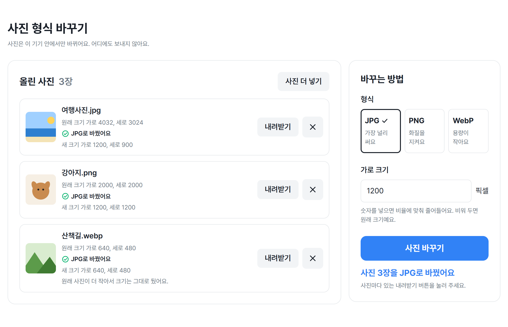
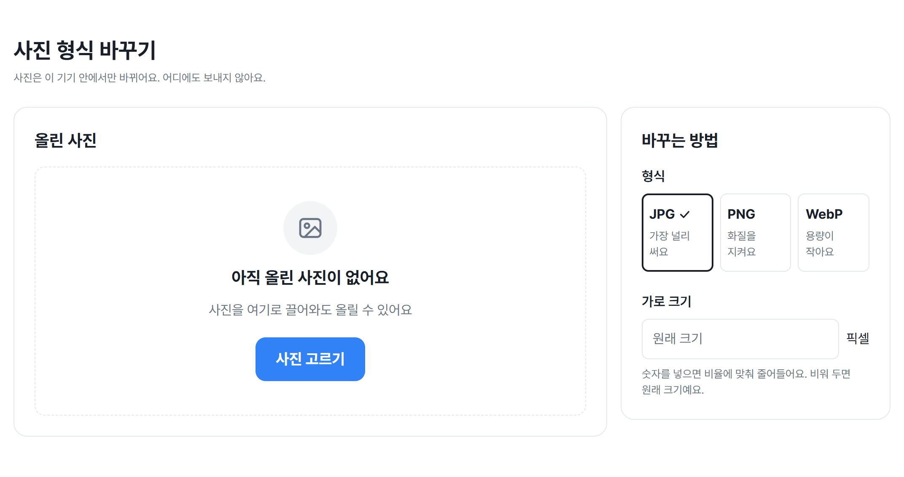
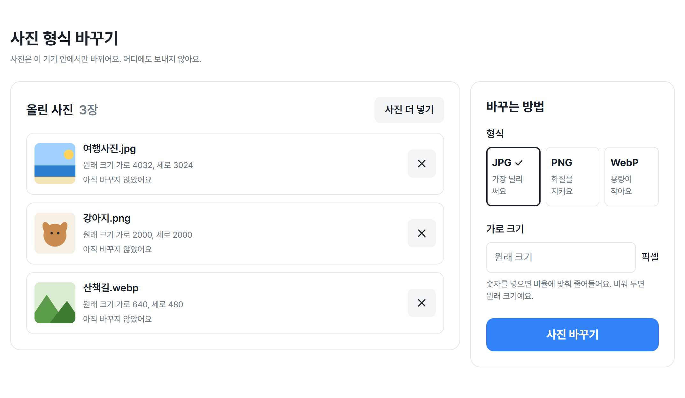
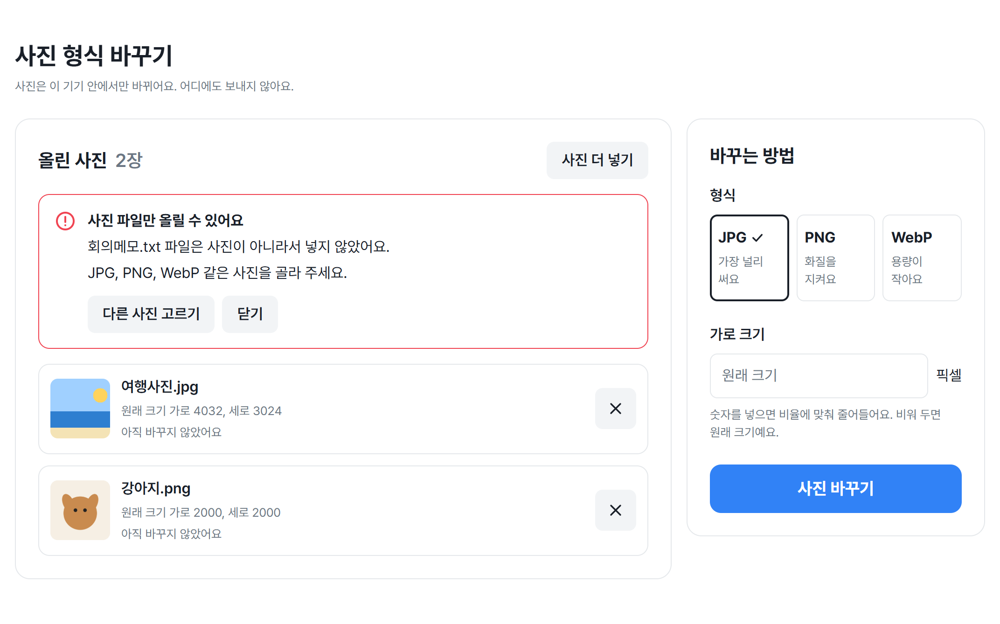
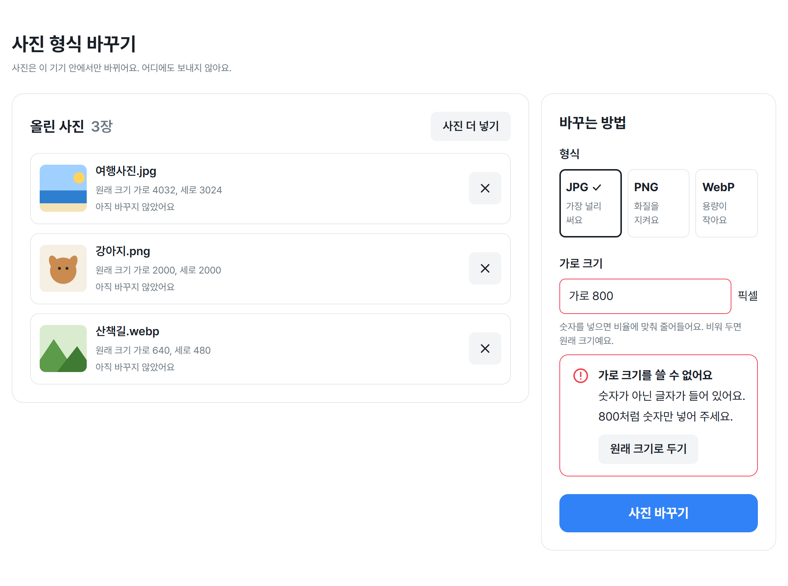
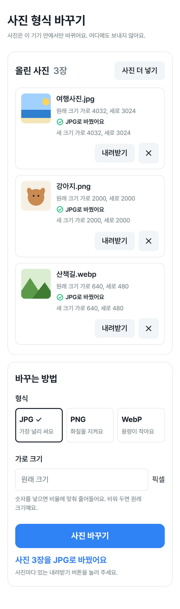

사용 설명서
사진 형식 바꾸기
사진을 JPG, PNG, WebP로 바꾸고 크기를 줄이는 방법을 한 장씩 알려 드려요.
설치 없이 내 컴퓨터에서 바로 써요

차례
이 순서로 쓰면 돼요
- 1
화면 열기
index.html 파일을 두 번 눌러 열어요
- 2
사진 올리기
버튼으로 고르거나 끌어다 놓아요
- 3
바꾸는 방법 정하기
형식과 가로 크기를 골라요
- 4
사진 바꾸기
파란 버튼 하나만 누르면 돼요
- 5
내려받기
바뀐 사진을 한 장씩 저장해요
- 6
문제가 생겼을 때
안내 문구를 보고 바로 고쳐요
1. 시작하기
화면 여는 방법
- 1
image-converter 폴더를 열어요
파일 탐색기(맥은 Finder)에서 내려받은 폴더를 찾아요
- 2
index.html 파일을 두 번 눌러요
크롬, 엣지, 사파리 같은 인터넷 창에 화면이 열려요
- 3
"사진 형식 바꾸기" 화면이 보이면 준비 끝이에요
따로 설치하거나 가입할 것은 없어요
폴더가 없다면 GitHub 저장소 페이지에서 초록색 Code 버튼 → Download ZIP 으로 받은 뒤 압축을 풀어요.
1. 시작하기
처음 화면

1사진은 내 기기 안에서만 바뀌어요
사진을 인터넷으로 보내지 않아요.
인터넷 창 안에서 바로 바꾸니 개인 사진도 안심하고 써요.
2. 사진 올리기
버튼으로 사진 고르기
2사진 고르기 버튼을 눌러요
사진을 고르는 창이 열려요.
여러 장을 한 번에 골라도 돼요.
Ctrl 키(맥은 command 키)를 누른 채 사진을 누르면 여러 장을 함께 고를 수 있어요.
2. 사진 올리기
끌어다 놓아서 올리기
3사진을 이곳으로 끌어와요
폴더에서 사진을 끌어 화면 위에 놓으면 바로 올라가요.
끄는 동안 "여기에 놓으면 사진이 올라가요" 안내가 보여요.
2. 사진 올리기
올린 사진 확인하기

4사진마다 한 줄씩 보여요
작은 미리보기, 파일 이름, 원래 크기를 확인해요.
아직 바꾸지 않은 사진은 "아직 바꾸지 않았어요"라고 나와요.
제목 옆 숫자는 올린 사진이 모두 몇 장인지 알려 줘요.
2. 사진 올리기
사진 더 넣기
5사진 더 넣기 버튼을 눌러요
이미 올린 사진은 그대로 두고 새 사진을 더해요.
끌어다 놓아도 똑같이 더해져요.
2. 사진 올리기
잘못 올린 사진 빼기
6X 버튼으로 사진을 빼요
누른 사진 한 장만 목록에서 빠져요.
내 컴퓨터에 있는 원래 사진은 지워지지 않아요.
3. 바꾸는 방법 정하기
바꿀 형식 고르기
7세 가지 중 하나를 골라요
JPG: 가장 널리 써요. 처음에는 JPG가 골라져 있어요.
PNG: 화질을 그대로 지켜요.
WebP: 용량이 작아서 누리집에 올리기 좋아요.
고른 칸은 굵은 테두리와 체크 표시로 보여요.
3. 바꾸는 방법 정하기
가로 크기 정하기
8원하는 가로 크기를 숫자로 넣어요
예를 들어 1200을 넣으면 가로가 1200픽셀이 돼요.
세로는 비율에 맞춰 저절로 줄어들어요.
비워 두면 원래 크기 그대로예요.
4. 사진 바꾸기
사진 바꾸기
9파란 사진 바꾸기 버튼을 눌러요
올린 사진을 모두 한 번에 바꿔요.
바꾸는 동안 "사진을 바꾸고 있어요"가 보여요.
4. 사진 바꾸기
다 바뀌었는지 확인하기
10버튼 아래 결과 문구를 봐요
"사진 3장을 JPG로 바꿨어요"처럼 몇 장을 바꿨는지 알려 줘요.
바꾸지 못한 사진이 있으면 몇 장인지 함께 알려 줘요.
4. 사진 바꾸기
사진마다 결과 보기
11바뀐 형식과 새 크기가 나와요
초록 체크와 함께 "JPG로 바꿨어요"가 보이면 끝난 거예요.
아래 줄에서 바뀐 가로·세로 크기를 확인해요.
5. 내려받기
바뀐 사진 내려받기
12내려받기 버튼을 눌러요
누른 사진 한 장이 내 컴퓨터에 저장돼요.
보통 "다운로드" 폴더에 들어가요.
파일 이름은 원래 이름에 새 형식이 붙어요. (여행사진.jpg)
여러 장이면 사진마다 내려받기 버튼을 하나씩 눌러요.
5. 내려받기
원래보다 크게 넣었을 때
13작은 사진은 크기를 그대로 둬요
넣은 가로 크기보다 원래 사진이 작으면 늘리지 않아요.
흐려지지 않도록 원래 크기로 바꾸고 그 사실을 알려 줘요.
6. 문제가 생겼을 때
사진이 아닌 파일을 올렸을 때

14"사진 파일만 올릴 수 있어요"가 보여요
어떤 파일이 왜 빠졌는지 알려 줘요.
사진은 그대로 올라가고 그 파일만 빠져요.
다른 사진 고르기 버튼으로 다시 고르거나 닫기로 안내를 닫아요.
6. 문제가 생겼을 때
가로 크기를 잘못 넣었을 때

15숫자만 넣어 달라고 알려 줘요
"가로 800"처럼 글자가 섞이면 쓸 수 없어요.
800처럼 숫자만 다시 넣어요.
원래 크기로 두기 버튼을 누르면 칸이 비워져요.
7. 휴대폰에서 쓰기
휴대폰 화면에서도 똑같이 써요

16위에서 아래로 차례대로 보여요
올린 사진이 먼저 보이고, 아래에 바꾸는 방법이 이어져요.
내려받기와 X 버튼은 사진 아래에 있어서 누르기 쉬워요.
알아 두기
이것만 기억하면 돼요
- 1
형식이나 크기를 바꾸면 다시 눌러요
설정을 바꾸면 이전 결과가 지워져요. 사진 바꾸기를 다시 눌러요.
- 2
투명한 배경은 JPG에서 흰색이 돼요
투명함을 지키려면 PNG나 WebP를 골라요.
- 3
창을 닫으면 목록이 비워져요
필요한 사진은 닫기 전에 내려받아요.
- 4
사진은 밖으로 나가지 않아요
모든 일이 내 인터넷 창 안에서만 일어나요.